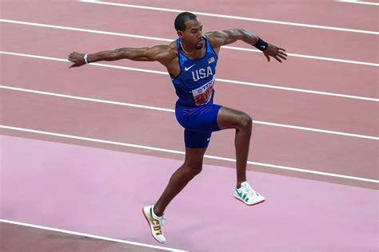

Triple Saut
Le triple saut, c’est de la poésie brutale. C’est la seule épreuve où l’athlète semble littéralement rebondir sur l’air, transformant la piste en un trampoline invisible.

Description de l'épreuve
Contrairement à la longueur, ici tout est une question de rythme. L’enchaînement est complexe : Cloche-pied (on retombe sur le même pied), Foulée bondissante (on change de pied), puis Saut final. C’est une chorégraphie de puissance pure qui demande une coordination hors du commun.
À chaque impact au sol, les articulations de l’athlète supportent jusqu’à 10 fois son poids. C’est un miracle de résistance physique. On a l’impression de voir un ressort humain géant se détendre trois fois de suite.
Règles de la compétition
L'athlète prend son impulsion sur la planche et doit retomber sur le même pied. Il reprend appui immédiatement pour sauter et retomber cette fois sur l'autre pied. Il utilise ce second pied pour s'élancer une dernière fois et atterrir des deux pieds dans le sable.
Contrairement à la longueur, la planche est située beaucoup plus loin du sable (généralement à 13 mètres pour les hommes et 11 mètres pour les femmes aux JO) pour laisser de la place aux deux premiers bonds.
Comme à la longueur, il est interdit de dépasser le bout de la planche (mordre) lors du premier appel.
Le point de mesure : On mesure de la planche jusqu'à la marque la plus proche laissée dans le sable par n'importe quelle partie du corps.
Sortie du bac : L'athlète doit sortir vers l'avant. S'il revient en arrière dans le sable après son saut, celui-ci peut être invalidé ou mesuré beaucoup plus court.
Calendrier de l'épreuve
| Phase | Date | Horaire | Catégorie |
|---|---|---|---|
| Qualifications | Vendredi 10/07 | 11:45 | Femmes |
| Qualifications | Vendredi 10/07 | 14:45 | Hommes |
| Finale | Samedi 11/07 | 14:45 | Femmes |
| Finale | Samedi 11/07 | 17:45 | Hommes |
Records
| Record | Athlète | Distance | Date |
|---|---|---|---|
| Record du monde (Hommes) | Jonathan Edwards (GBR) | 18,29 m | 7 août 1995 |
| Record du monde (Femmes) | Yulimar Rojas (VEN) | 15,74 m | 20 mars 2022 |